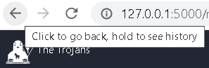

 Designers should aim to offer users obvious ways to reverse their actions. These reversals should be permitted at various points whether it occurs after a single action, a data entry or a whole sequence of actions.